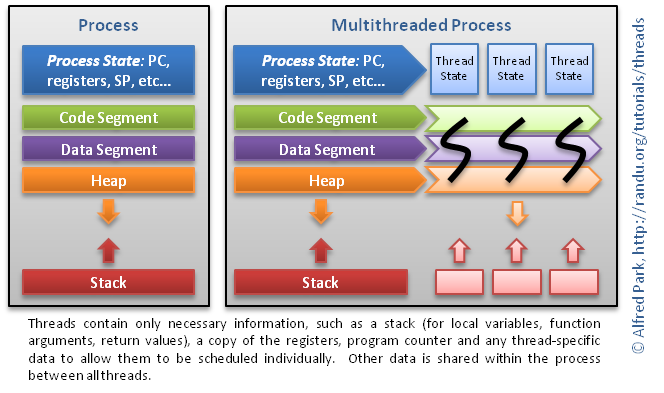

Go Course Melbourne, May-June 2019
Cameron Hutchison Daniel Cantos Joshua Carpeggiani Julia Ogris Keilin Olsen Ryan O’Kane Sai Kiran Gummaraj
Go Gopher
 .caption [[https://blog.golang.org/gopher]]
.caption [[https://blog.golang.org/gopher]]
Course Overview
- Introduction to Go
- Go programming language
- Go standard library
- Go tool chaina
- Third party Go libraries commonly used
- JSON and RESTful API
Find Slides at source anz-bank/go-slides on GitHub)
Course Completion
- Complete the Go Fundamentals Course by finishing 5 lab assignments
- Complete the Full Go Course by finishing 10 lab assignments
- Complete the first lab assignments as described in these slides
- Merge your approved Pull Request (PR) to complete a lab assignment
- Review a colleague’s PR and add a link to the review in your own PR description
- Submit your last PR before 15/7/2019 for a final re-review deadline on 31/7/2019
- Receive a printed certificate if you complete 5 or 10 labs
Talks
All talks take place at the Charles Goode Auditorium. Attendance is optional. The last 30 minutes of each talk are reserved for Q&A and help.
- 27 May 2019, 2-5pm: Introduction and Lab Overview
- 29 May 2019, 9-11am: Values, Control Flow, Iterable Data Types and Range
- 31 May 2019, 9-11am: Functions, Data Structures and Interfaces
- 7 June 2019, 9-11am: Errors, Concurrency and Project Layout
- 13 June 2019, 9-11am:Toolchain, Standard Library, JSON and RESTful API
Prerequisites
- No prior Go knowledge required
- Some programming experience strongly recommended
- Basic understanding of JSON and RESTful APIs recommended
- Install go 1.12
- Install golangci-lint
Contact
Please join #go-course on [[https://anzengineering.slack.com]]
Instructors
@camh, Cameron.Hutchison@anz.com @Dan, Daniel.Cantos@anz.com @joshcarp, Joshua.Carpeggiani@anz.com @julia, Julia.Ogris@anz.com @keilin, Keilin.Olsen@anz.com @ryanokane, Ryan.O'Kane@anz.com @saikirian, SaiKiran.Gummaraj@anz.com
History and Overview
History of Go
 .caption [[https://xkcd.com/303/]]
.caption [[https://xkcd.com/303/]]
2007: Robert Griesemer, Rob Pike, and Ken Thompson start working on Go at Google 2008: Russ Cox (go mod) and Ian Taylor (gcc frontend) join 2009: Go goes Open Source 2012: Go version 1.0
What is Go?
- A simple language that is easy to learn and read
- Statically typed, but with a dynamic feel
- Compiled to native machine code, but has a fast development cycle
- Language-level concurrency features
- Comprehensive and clear standard library
- Garbage collected
- Unicode support
- Great tools
- Open source
(Source: Go and the Zen of Python)
What does Go look like?
Hello world in Go
package main
import (
"fmt"
)
func main() {
fmt.Println("Hello, Melbourne ‚òïÔ∏èüé∏üèà‚ù§Ô∏è")
}
Execute with
go run hello.go
What is Go NOT?
Go favours simplicity and directness resulting in some purposeful omissions:
- No type hierarchies or inheritance
- No exceptions
- No method overloading
- No generics
- No decorators
- No named or optional arguments
- No operator overloading
- No macros
- No arguments about code style :)
Why Go
- simple: easy to learn and read
- a single obvious right way to do most things
- tools -
gofmt,goimports,godoc,gomod,gotest,golangci-lint, coverage - standard library
- productive and fun
- lightweight concurrency
Here is a great read on Rob Pike’s blog about “Why Go” - Less is Exponentially More
Demo
Demo
- 2 seconds latency Pingserver
- Java Spring Boot implementation
- Go implementation
- Benchmark
Java Spring Boot Initializr
── build.gradle
├── gradle
│   └── wrapper
│   ├── gradle-wrapper.jar
│   └── gradle-wrapper.properties
├── gradlew
├── gradlew.bat
├── settings.gradle
└── src
├── main
│   ├── java
│   │   └── com
│   │   └── anz
│   │   └── demo
│   │   └── pingserver
│   │   ├── PingserverApplication.java
│   │   └── controller
│   │   └── PingController.java <--------- THAT'S THE ONE
│   └── resources
│   └── application.properties
└── test
.....
└── PingserverApplicationTests.java
PingController.java
Source on GitHub
package com.anz.dcx.serverdemo.controller;
import org.springframework.http.MediaType;
import org.springframework.web.bind.annotation.GetMapping;
import org.springframework.web.bind.annotation.ResponseBody;
import org.springframework.web.bind.annotation.RestController;
@RestController
public class PingController {
@GetMapping(path = "/ping", produces = MediaType.TEXT_PLAIN_VALUE)
@ResponseBody
String ping() throws Exception {
Thread.sleep(2000L);
return "pong";
}
}
Execute with
./gradlew clean bootRun
Go Implementation
Source on GitHub
├── go.mod
├── go.sum
└── main.go
Execute with
go run main.go
Main.go
package main
import (
"fmt"
"log"
"net/http"
"time"
)
func main() {
http.HandleFunc("/ping", func(w http.ResponseWriter, r *http.Request) {
time.Sleep(2000 * time.Millisecond)
fmt.Fprint(w, "pong")
})
addr := ":9090"
fmt.Println("Starting webserver on port", addr)
log.Fatal(http.ListenAndServe(addr, nil))
}
Benchmark
-
19,000 concurrent requests
-
Ubuntu 18.04 2.3GHz quad-core Intel Core i7
-
Apache’s
abcommandab -n 19000 -c 19000 -s 200 -r localhost:8080/ping ## Java ab -n 19000 -c 19000 -s 200 -r localhost:9090/ping ## go
-
Results
Java median: 102.005 sec Java 95%: 135.280 sec
Go median: 14.954 sec Go 95%: 15.061 sec
-
Further details on GitHub
Benchmark
- Range of concurrent requests from 1,000 to 19,000 500 _
Interlude: Towards Continuous Deployment
What is Continuous Deployment (CD)?
Continuous Deployment != Continuous Delivery
 .caption Yassal Sundman, Continuous Delivery vs Continuous Deployment
.caption Yassal Sundman, Continuous Delivery vs Continuous Deployment
Continuous Deployment Quotes
“Continuous Deployment is a strategy for software releases wherein any code commit that passes the automated testing phase is automatically released into the production environment.” TechTarget definition
“Continuous deployment requires a highly developed culture of monitoring, being on call, and having the capacity to recover quickly.” Marko Anastasov, Semaphore Engineering Blog
Recommendations for CD (1/3)
- Use trunk based development (not GitFlow)
- Create small PRs (Pull Requests) that can be Squash Merged
- … which lead to revertible commits that have passed automated tests
- Protect
masterbranch on GitHub
Recommendations for CD (2/3)
Quality leads to the confidence to automatically deploy, so we need ways to increase and maintain quality.
- Write great commit messages
- Think about the reviewer and review your own PRs first
- Lint strictly
golangci-lintrun - Ensure 100% coverage
Recommendations for CD (3/3)
- Test (unit & system), lint & cover as part of CI (Continuous Integration)
- Version all deployments (use semver; tag source, images etc.)
- Document for newbies in the README.md (must!) and use godoc
- Enjoy your CD as last step after successful CI run on master
Protect master branch on GitHub
Settings -> Options:
[ ] Allow merge commits
[x] Allow squash merging
[ ] Allow rebase merging
Settings -> Branches -> [Add rule|Edit] `master`:
[x] Require pull request reviews before merging
[x] Dismiss stale pull request approvals when new commits are pushed
[x] Require status checks to pass before merging
[x] Require branches to be up to date before merging
[x] Include administrators
Commit messages
 .caption [[https://xkcd.com/1296/]]
.caption [[https://xkcd.com/1296/]]
Commit messages - spot the difference
[[https://chris.beams.io/posts/git-commit/]]
$ git log --oneline -5 --author cbeams --before "Fri Mar 26 2009"
e5f4b49 Re-adding ConfigurationPostProcessorTests after its brief removal in r814. @Ignore-ing the testCglibClassesAreLoadedJustInTimeForEnhancement() method as it turns out this was one of the culprits in the recent build breakage. The classloader hacking causes subtle downstream effects, breaking unrelated tests. The test method is still useful, but should only be run on a manual basis to ensure CGLIB is not prematurely classloaded, and should not be run as part of the automated build.
2db0f12 fixed two build-breaking issues: + reverted ClassMetadataReadingVisitor to revision 794 + eliminated ConfigurationPostProcessorTests until further investigation determines why it causes downstream tests to fail (such as the seemingly unrelated ClassPathXmlApplicationContextTests)
147709f Tweaks to package-info.java files
22b25e0 Consolidated Util and MutableAnnotationUtils classes into existing AsmUtils
7f96f57 polishing
versus
$ git log --oneline -5 --author pwebb --before "Sat Aug 30 2014"
5ba3db6 Fix failing CompositePropertySourceTests
84564a0 Rework @PropertySource early parsing logic
e142fd1 Add tests for ImportSelector meta-data
887815f Update docbook dependency and generate epub
ac8326d Polish mockito usage
Recipe for great commit messages
[[https://chris.beams.io/posts/git-commit/]]
- Separate subject from body with a blank line
- Limit the subject line to 60 characters
- Capitalize the subject line
- Do not end the subject line with a period
- Use the imperative mood in the subject line
- Wrap the body at 80 characters
- Use the body to explain what and why vs. how
Two git commands for precision work
- Use
gitrebase-iCOMMIT_HASHto rework your commits if necessary - Use
gitadd-pfor two separate concerns addressed in the one file
Don’t be afraid! Try it out on a new, throwaway branch.
Rebase interactively
git log --oneline
58b250e WIP
d558e36 Add coverage and pre-pr checklist to README.md
c9724be Fix copyright holder in LICENCE
aa3b728 Added Apache 2.0 LICENSE
8a2fd40 Initial commit
Drop the latest commit, reword Added... to Add and fold in the Fix... commit with:
git rebase -i 8a2fd40
and update commits in your editor with:
reword aa3b728 Added Apache 2.0 LICENSE
fixup c9724be Fix copyright holder in LICENCE
pick d558e36 Add coverage and pre-pr checklist to README.md
drop 58b250e WIP
Rebase a feature branch
Rebase will sequentially take the commits from feature and reapply them to master:
A---B---C feature
/
D---E---F---G master
will become
A'--B'--C' feature
/
D---E---F---G master
Use the following commands:
git checkout master
git pull upstream master ## or just `git pull` if `master` is set to track `upstream/master`
git checkout feature
git rebase master
git push -f
Update branch on Github
For an existing PR you can alternatively click Update branch on Github.
This will merge upstream/master into origin/feature.
Before adding any commits to feature locally run:
git pull origin feature
Pull Request (PR) recommendations (1/2)
- Choose a meaningful PR title, it will become your Squash Merge message
- Fill in PR description and reference an Issue for instance with #6
- Review the Files changed tab - many reviewers start here
- Review the Commits tab - some reviewers start here
- Review the Checks tab - all checks must pass
Pull Request (PR) recommendations (2/2)
- Think of the reviewer: your code needs to be reviewable and that should be a prime concern when writing your code, commits and PRs
- Tag your PR Title with
[WIP]if adjustments are needed - Rework fixup commits with
gitrebase-iCOMMIT_HASHand force push - Add reviewers and remove
[WIP]tag when all of the above are met - Delete branch once merged, especially when using a single remote (no forks)
Go language fundamentals
Tutorials, references and tools
Getting started
Notes: Keep your exported identifiers to as few as possible Document them
Basic types
bool
string
int int8 int16 int32 int64
uint uint8 uint16 uint32 uint64 uintptr
byte // alias for uint8
rune // alias for int32
// represents a Unicode code point
float32 float64
complex64 complex128
Zero values
0 for numeric types
false for the boolean type
"" for strings
nil for pointers
Values and control flow
Lab setup
Prerequisites
- Install git
- Install go 1.12
- Install golangci-lint
Repository setup
- Login to github.com
- Click
Forkin the top right corner of [[https://github.com/anz-bank/go-course]] - Clone your fork.
USERNAMEis your GitHub username:
git clone https://github.com/USERNAME/go-course.git
cd go-course
- Create
upstreamremote pointing to anz-bank/go-course:
git remote add upstream https://github.com/anz-bank/go-course.git
git remote update
git branch -u upstream/master master
git pull
PR from own fork - typical git workflow
Start work on a new branch lab1 with:
git checkout master
git pull upstream master ## with upstream/master tracking just use `git pull`
git checkout -b lab1
Write, test and commit code code, then:
git push -u origin
Creating PRs
- from
featurebranch of your own fork (remoteorigin) - to
masteron anz-bank/go-course (remoteupstream)
Follow the PR checklist before submitting
When ready, submit and add the Ready for review tag
Update feature branch
If master has advanced after feature branch and PR creation you have two options:
#Rebase* *feature* *branch*
git checkout master
git pull upstream master ## or just `git pull` if `master` is set to track `upstream/master`
git checkout feature
git rebase master
git push -f
or
#Update* *branch* *on* *GitHub*
For an existing PR you can alternatively click Update branch on Github.
This will merge upstream/master into origin/feature.
Before adding any commits to feature locally run:
git pull origin feature
Lab PR approval flow - Programmer
- Label with the appropriate lab tag (eg:
lab1) - When ready, label with
Readyforreview - Wait for PR to be labelled
ApprovedbycolleagueorChangesrequested - If approved by colleague, wait for a CODEOWNER to approve and label with
Mergeme - Merge
Lab PR approval flow - Reviewer
- Remove
Readyforreviewand addUnderreview - Label with either
ApprovedbycolleagueorChangesrequestedand removeUnderreview
Test samples
Lab 1 - Fibonacci
-
Create an executable go program in directory
01_fib/USERNAME -
Write a function that prints the first n Fibonacci numbers
func fib(n int)
-
Call
fib(7)inmainto print
1
1
2
3
5
8
13
- Bonus points: For negative n print Negafibonacci numbers.
Iterable data types and Range
Lab 2 - Bubble sort
-
Create an executable go program in directory
02_bubble/USERNAME -
Write a function that returns a sorted copy of
intslicesusing Bubble sort:func bubble(s []int) []int
-
Call
fmt.Println(bubble([]int{3,2,1,5}))inmainto print:[1 2 3 5]
-
Bonus points: implement Insertion sort
-
Extra bonus points: implement an O(n log(n)) sorting algorithm
Lab 3 - Letter frequency
-
Create an executable go program in directory
03_letters/USERNAME -
Write a function that returns a mapping of each letter to its frequency:
func letters(s string) map[rune]int
-
Write a function that returns a sorted slice of strings with elements
"{key}:{val}". Use package sort:func sortLetters(m map[rune]int) []string
-
Call
fmt.Println(strings.Join(sortLetters(letters("aba")),"\n"))inmainto print:a:2 b:1
-
Bonus points: comprehensive tests
Functions
- Functions: parameters and return values
- Variadic Functions
- Closures
Lab 4 - Numeronym
-
Create an executable go program in directory
04_numeronym/USERNAME -
Write a function that returns a slice of numeronyms for its input strings:
func numeronyms(vals …string) []string
-
Call
fmt.Println(numeronyms("accessibility","Kubernetes","abc"))inmainto print:[a11y K8s abc]
Data structures and interfaces
“The bigger the interface, the weaker the abstraction.” - Rob Pike
Embedding - Interfaces
“Go does not provide the typical, type-driven notion of subclassing, but it does have the ability to ‚Äúborrow‚Äù pieces of an implementation by embedding types within a struct or interface.” - Effective Go
type Reader interface {
Read(p []byte) (n int, err error)
}
type Writer interface {
Write(p []byte) (n int, err error)
}
// ReadWriter is the interface that combines the Reader and Writer interfaces.
type ReadWriter interface {
Reader
Writer
}
Embedding - Structs
“When we embed a type, the methods of that type become methods of the outer type, but when they are invoked the receiver of the method is the inner type, not the outer one.” - Effective Go
- The same applies for all fields within an embedded type
Precedence when Embedding
Embedding types introduces the possiblity for naming conflicts. Go follows some simple rules to help resolve this:
- A field or method
Xwill hide any other field or methodXfound in a more deeply nested part of the type - If a field or method appears at the same nesting level, it will return an error
Examples
Lab 5 - Stringer
-
Create an executable go program in directory
05_stringer/USERNAME -
Make the
IPAddrtype implementfmt.Stringerto print the address as a dotted quad -
Find hints at Tour of Go Exercise: Stringers
-
Call
fmt.Println(IPAddr{127,0,0,1})inmainto print:127.0.0.1
Go for Java devs
- Functions are lambdas
- Typed constants are enums
- exported == public
- unexported == protected, not private
- There are no classes, though most types behave like them
- embedding == composition + inheritence
- map[type]struct{} == Set
- Beware of pointers
- Pointers will also save your day
Go for Java devs
- Not everything is object oriented. Pure functions are just fine
- Don’t worry about abstraction up front, it is easy to abstract in go
- Don’t worry about starting thousands of goroutines (worry when you get to millions)
- Don’t worry about access scope within a package
- Don’t worry about frameworks
- Don’t worry about patterns
- Don’t overstructure your project
- Remember to check for errors
- Don’t fight the formatter
- Don’t panic
Test two implementations of interface in suite (1/2)
// scaler.go
type scaler interface {
scale(float64)
}
type rect struct {
a, b int
}
func (r *rect) scale(s float64) {
r.a = int(float64(r.a) * s)
r.b = int(float64(r.b) * s)
}
type circle struct {
r int
}
func (c *circle) scale(s float64) {
c.r = int(float64(c.r) * s)
}
Test two implementations of interface in suite (2/2)
type scalerSuite struct {
suite.Suite
scaler scaler
}
func (s *scalerSuite) TestScaler() {
r := assert.New(s.T())
initial := fmt.Sprintf("%#v", s.scaler)
s.scaler.scale(2.0)
scaled := fmt.Sprintf("%#v", s.scaler)
s.scaler.scale(0.5)
scaledBack := fmt.Sprintf("%#v", s.scaler)
fmt.Printf("%s\n%s\n%s\n", initial, scaled, scaledBack)
r.Equal(initial, scaledBack)
r.NotEqual(initial, scaled)
}
func TestStorer(t *testing.T) {
suite.Run(t, &scalerSuite{scaler: &circle{2}})
suite.Run(t, &scalerSuite{scaler: &rect{1, 1}})
}
Lab 6 - CRUD puppy with interface
- Create an executable go program in directory
06_puppy/USERNAME(see hints) - Implement a
Puppystruct containingID,Breed,Colour,Value. - Create
Storerinterface with CRUD methods forPuppy - Write a
MapStoreimplementation ofStorerbacked by amap - Write a
SyncStoreimplementation ofStorerbacked by a sync.Map - Keep all implementation files in the same folder and in package
main - Test against the
Storerinterface and run in suite with both implementations
 .caption J. D. Frazer “Illiad”, User Friendly - Crud Puppy
.caption J. D. Frazer “Illiad”, User Friendly - Crud Puppy
Error Handling in Go
Errors in Go
erroris a builtin interface source: error
type error interface {
Error() string
}
- Check errors explicitly
Errors in Go (1/2)
- Create error values using
errors.New(): var ErrPermission = errors.New(“permission denied”) - Alternatively using
fmt.Errorf: return fmt.Errorf(“archive/tar: missed writing %d bytes”, nb) - Exported error variables start with ‘Err’ (like ErrTimeout, ErrNotFound)
Errors in Go (2/2)
- Create custom error types source: AddrError: type AddrError struct { Err string Addr string } func (e *AddrError) Error() string { if e == nil { return “” } s := e.Err if e.Addr != "" { s = “address " + e.Addr + “: " + s } return s }
- Error values can be logged and printed: log.Println(err)
Error Handling
- Check for error
- Compare error values
- Compare error types
- Program with error
- By convention many standard library functions return
erroras the second return value
“Errors are values.” - Rob Pike
Defer
deferdelays the execution of a function until the surrounding function returns- When
deferis called the parameters to the call are evaluated and saved - Deferred functions are called when function returns or stack unwinds
- Syntax: defer
- Deferred functions are called in reverse order
- Most commonly used for resource cleanup (close IO resources, release locks etc.)
Panic and Recover (1/2)
panicandrecoverare builtin functionspanicandrecoverbehave similar tothrow/catchin other languagespanic: func panic(interface{})panicunwinds the stack, calling deferred functions up to the top-level function of the executing goroutinerecover(see next slide) can intercept this unwinding- Without
recover, the program is terminated and the error condition is reported
Panic and Recover (2/2)
recover: func recover() interface{}recoverallows a program to handle panic called in another function- Must be called from within a deferred function in the same goroutine
- Returns the value passed by call to panic
Don’t Panic
- Panic could terminate the goroutine or the program
- Use
panicrarely and judiciously in your own code - Use it in deeply nested internal methods/functions and return an error/status to the caller
- Don’t
panicacross package boundaries - Don’t make a panic part of a package’s API, instead always recover at the interface level of the package and return an error
- Basic illustration of panic
- Basic illustration of panic and recover
- Recover and return value
Lab 7 - Errors
-
Create an executable go program in directory
07_errors/USERNAME -
Copy the CRUD puppy from upstream master
06_puppy/USERNAME -
Add a custom error type
Errorwith fieldsMessageandCode -
Extend the
Storerinterface for all methods to also returnerror -
Create errors for:
- Value < 0
- ID not found in Read, Update and Delete
-
Add locking for proper use of sync.Map
-
Bonus points: Add a third
Storerimplementation using LevelDB
Go Concurrency
Topics
- Concurrency
- Concurrency in Go
- Goroutines
- Channels
- Range & Select
- Under the hood: Processes, Threads, Goroutines
- Under the hood: Go Runtime
Concurrency
Definition
- Concurrency is the ability of different parts or units of a program, algorithm, or problem to be executed out-of-order or in partial order, without affecting the final outcome Source: Wikipedia
- Parallelism is the ability to run different parts or units of a program simultaneously
- “Don’t communicate by sharing memory, share memory by communicating.”
- “Concurrency is not parallelism.”
- “Concurrency is about structure, parallelism is about execution.”
Concurrency in Go
Go provides:
- Concurrent execution (goroutines)
- Synchronisation and message passing (channels)
- Multi-way concurrent control (select)
Goroutines
- Goroutine is an extremely lightweight thread of execution
- Low initial stack size (2 Kb) that grows
- Runs concurrently like threads
- Start a goroutine using the ‘go’ statement go
Channels
- Communication mechanism (conduit) that lets goroutines exchange data
- Each channel allows goroutines to send/receive a particular data type (called element type)
- Declare channel using
chankeyword - Create unbuffered channel
ch := make(chan int) // ch is an unbuffered channel of
intelement type - Create buffered channel
ch := make(chan int, 10) // ch is a buffered channel of size 10 and type
int - Close channel using
close()function
Channel Operations (1/2)
-
Send and Receive values with the channel operator <-
ch <- v // send v to the channel ch v := <-ch // receive from ch and assign it to v
-
Send to buffered channel blocks only when the channel is full
-
Receive from a channel blocks when the channel is empty
-
Sender can close the channel to indicate no more values will be sent
-
Receiver can test whether a channel has been closed
v, ok := <-ch // ok is false if channel is closed and no more data is available
-
Sending message on a closed/nil channel causes the program to panic
-
Receive on a closed channel never blocks
Channel Operations (2/2)
-
Range on a channel
for v := range ch { fmt.Println(v) }
-
Range over a channel that never closes never finishes
select Statement
-
Allows composing of channels
-
Chooses which set of possible “send” or “receive” operations will proceed
var ch1, ch2 chan int select { case ch1 <- 1: fmt.Println(“1 sent on ch1”) case x, ok := <-ch2: if ok { fmt.Printf("%v received on ch2”, x) } else { fmt.Println(“ch2 is closed”) } default: fmt.Println(“no communication”) }
Under the hood: Process, Threads and OS Scheduling
.caption [[https://randu.org/tutorials/threads/]]
- Large (default 2 Mb on Linux) stack size
- 1x1 mapping between user and kernel threads
Under the hood: Go Runtime
- Scheduling, Memory Management, Garbage Collection
- Scheduler tracks goroutines and schedules them to run on a set of OS threads
- GOMAXPROCS and runtime.GOMAXPROCS() sets the number of OS threads
 .caption Analysis of the Go runtime scheduler
.caption Analysis of the Go runtime scheduler
Channel Examples
Tools and Conventions
Project layout
For non-trivial size projects follow the layout suggested by golang-standards Abridged version:
├── README.md
├── go.mod
├── go.sum
├── cloudbuild.yaml
├── .gitignore
├── .golangci.yml
├── pkg
│   ├── bar
│   │   ├── bar.go
│   │   ├── baz.go
│   │   └── bar_test.go
│   └── foo
│   ├── foo.go
│   └── foo_test.go
├── cmd
│   └── fooserver
│   └── main.go
├── docs
└── vendor
Lab 8 - Project Layout
- Copy the CRUD puppy from upstream master
07_errors/USERNAME - Create directory
08_project/USERNAMEcontaining
├── README.md
├── pkg
│   └── puppy
│   ├── types.go
│   ├── types_test.go
│   ├── errors.go
│   ├── errors_test.go
│   └── store
│   ├── storer.go
│   └── .... store files and tests, e.g. mapstore.go
└── cmd
└── puppy-server
└── main.go
- Add project introduction and how to build, run & test it to
README.md
Go tool chain
go help
go version
go build ./...
go test ./...
go install ./...
go mod init
go mod vendor
go mod tidy
go clean -modcache
go test -coverprofile=coverage.out ./... && go tool cover -html=coverage.out
Other tools
Lint with
golangci-lint run
and configure the linter in .golangci.yml
Use gofmt or goimport as part of your editor/IDE setup
Go standard library
[[https://golang.org/pkg/]]
- fmt
- strings
- time
- encoding/json
- net/http
- regexp
- sort
- database/sql
- os
- path
- bytes
- …
JSON - (De-)Serialisation
-
Marshalconverts a value into a JSON byte array -
Unmarshalconverts a JSON-encoded byte array into a value -
An
Encodermarshals values as JSON to a stream (io.Writer) -
A
Decoderunmarshals JSON-encoded values from a stream (io.Reader)func Marshal(v interface{}) ([]byte, error) { /* … */ }
func Unmarshal(data []byte, v interface{}) error { /* … */ }
JSON - Field Tags
- Attach a ‘json’ field tag to customise (un)marshalling
- Common error is making Go fields private (lower case) which results in the fields not being (un)marshalled
type Car struct {
Manufacturer string `json:"manufacturer"`
Model string `json:"model"`
Year int64 `json:"year,omitempty"`
}
JSON - Zero Values
- All Go struct fields will be set to their type’s zero value if the corresponding JSON property is missing.
- Pointer types have a zero value of
nil - To be able to differentiate between a field which has been set explicitly to it’s zero value or omitted, you must use pointer types
Examples
Lab 9 - JSON puppy
- Create directory
09_json/USERNAMEcontaining a copy of upstream master08_project/USERNAME - Add JSON tags to puppy data type
- Test marshalling and unmarshalling using require.JSONEq
- Add command line flag
-dFILEwith long form--dataFILEusing kingpin.v2. FILE should contain an array of puppies in JSON format. Parse this file and store its contents.
Useful third party packages
testify - testing toolkit chi - lightweight router for Go HTTP services kingpin.v2 - command line and flag parser logrus - structured logger
pq - Postgres driver for the database/sql redigo - lightweight client for Redis mgo - MongoDB driver for Go goracle - Oracle driver for the database/sql
jsonschema - JSON schema compilation and validation go-jose - JWT utils …
A RESTful API starter (1/3)
Full sample code on Go Play Space -
not executable to due 3rd party dependency chi:
basic sample
sample with error handling
type TeapotHandler interface {
handlePost(w http.ResponseWriter, r *http.Request)
handleGet(w http.ResponseWriter, r *http.Request)
}
func SetupRoutes(r chi.Router, h TeapotHandler) {
r.Post("/api/teapot", h.handlePost)
r.Get("/api/teapot/{id}", h.handleGet)
}
func main() {
r := chi.NewRouter()
h := NewMapTeapotHandler()
SetupRoutes(r, h)
http.ListenAndServe(":7735", r)
}
A RESTful API starter (2/3)
type Teapot struct {
ID int
Colour string
Temperature int
}
// MapTeapotHandler implements TeapotHandler
type MapTeapotHandler struct {
store map[int]Teapot // Race condition
maxID int
}
func NewMapTeapotHandler() *MapTeapotHandler {
return &MapTeapotHandler{store: map[int]Teapot{}}
}
A RESTful API starter (3/3)
// MapTeapotHandler implements TeapotHandler
func (mt *MapTeapotHandler) handleGet(w http.ResponseWriter, r *http.Request) {
id, _ := strconv.Atoi(chi.URLParam(r, "id"))
teapot, _ := mt.store[id]
render.JSON(w, r, teapot)
}
func (mt *MapTeapotHandler) handlePost(w http.ResponseWriter, r *http.Request) {
var teapot Teapot
render.DecodeJSON(r.Body, &teapot)
mt.maxID++ // Race condition
teapot.ID = mt.maxID
mt.store[mt.maxID] = teapot
render.JSON(w, r, teapot)
}
Lab 10 - Puppy REST
-
Create directory
10_rest/USERNAMEcontaining a copy of upstream master09_json/USERNAME -
Add file
pkg/puppy/rest.goimplementing:GET /api/puppy/{id} POST /api/puppy/ Payload: Puppy JSON without ID PUT /api/puppy/{id} Payload: Puppy JSON without ID DELETE /api/puppy/{id}
-
Use net/http/httptest for testing
-
Add flag
-pPORTwith long flag--portPORTto command line flags -
Add flag
-sSTOREwith long flag--storeSTOREwith accepted values:map, sync, db
-
Document the API in README.md
Lab 11 - Puppy Notifications
-
Create directory
11_notify/USERNAMEcontaining a copy of upstream master10_rest/USERNAME -
Create
cmd/lostpuppy-service/main.gorunning single endpoint:POST /api/lostpuppy/ Payload: { id: PUPPY_ID }
-
This stubbed endpoint returns with 2 second delay:
HTTP status 201 for even IDs HTTP status 500 for odd IDs
-
Update Puppy
Deletemethod to notify lostpuppy-service in a goroutine and log response code asynchronously.
Further project work
- [[https://github.com/anz-bank/go-samplerest]]
- [[https://github.com/anz-bank/decimal]]
Future of Go
- Goal to fix the most significant ways Go 1 fails to scale.
- Based on Experience Reports 3 pain points were identified
- Dependency Management (Addressed via Go Modules from version 1.11 onwards)
- Error handling
- Generics
Rob Pike’s Talk Towards Go 2 Dave Cheney Blog Past Present and Future of Go